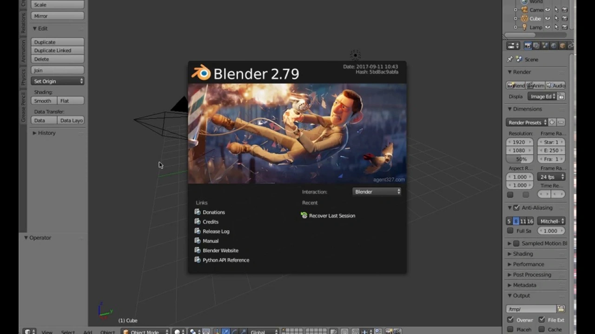

These animations were created in Blender 2.79 during the last 7 months of 2019. This period marked my first exposure to 3D modeling and animation, where I focused on mastering the fundamentals. My experiments primarily explored text animation, lighting, Blender modifiers, camera work, physics, and simulations.

As you can see in this section, I present some of my initial animations with this program that I learned with my high school professor Jesús Álvaro (@jesuslalvaro). I also learned some techniques and simulations from various YouTube channels that helped me develop animation skills and understand Blender better moving forward with my own creations: